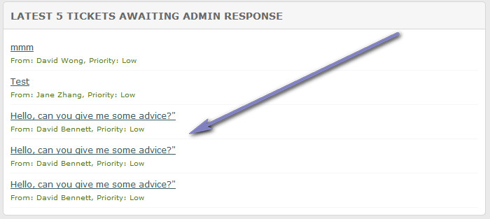

Documentation -


Documentation -
COMMERCIAL VERSION INCLUDES: - FREE upgrades for life - One time payment, NO subscriptions - ALL features unlocked and unlimited
Overview
The admin homepage offers an overview of stats for the system. All ticket stats are filtered by department, so if you have a user logged in who only has access to a single department, stats are only shown for that department. Main administrative user sees all data always.
Some of the admin page options can be removed as detailed below.
Ticket Overview
Shows overview of tickets. Filtered by departments if logged in user doesn`t have access to all departments or by assigned ticket permissions. This box can be hidden via the 'ADMIN_TICKET_OVERVIEW' option in the 'admin/control/user-defined/defined2.inc.php' file. Set to 0 to disable.
Dispute Overview

Shows overview of disputes. Filtered by departments if logged in user doesn`t have access to all departments. This box can be hidden via the 'ADMIN_DISPUTE_OVERVIEW' option in the 'admin/control/user-defined/defined2.inc.php' file. Set to 0 to disable.
System Overview
Shows system overview. Shown ONLY to administrative user. This box can be hidden via the 'ADMIN_SYSTEM_OVERVIEW' option in the 'admin/control/user-defined/defined2.inc.php' file. Set to 0 to disable.
Quick Links
Quick links. Shown to all users. Can be added or edited in the 'admin/templates/quick-links.php' file. See the additional notes in that file.
Graphs/Stats
Homepage graphs. Filtered by departments if logged in user doesn`t have access to all departments. Shows ticket/dispute stats for current day, week, month or year. Horizontal axis for each is as follows:
Today - 00:00am - 23:59pm
This Week - Mon to Fri/Sun to Fri (Depending on 'Start Day for Week' setting)
This Month - 01 to 28/29/30 or 31 (Depending on month/leap year etc)
This Year - Jan to Dec
Latest Tickets/Disputes

The total areas display how many open tickets/disputes are awaiting visitor or admin responses. Filtered by departments if logged in user doesn`t have access to all departments. Click links to view ticket.
Each area can be disabled or display more/less tickets/disputes. The default is the latest 5 for each area. To update these, open the 'admin/control/user-defined/defined2.inc.php' file and scroll to:
define('ADMIN_HOME_LATEST_AD_TICKETS', 5);
define('ADMIN_HOME_LATEST_VIS_TICKETS', 5);
define('ADMIN_HOME_LATEST_AD_DISPUTES', 5);
define('ADMIN_HOME_LATEST_VIS_DISPUTES', 5);
Set any to 0 to disable from view. Set to a higher value to show more tickets/disputes.